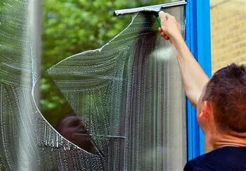
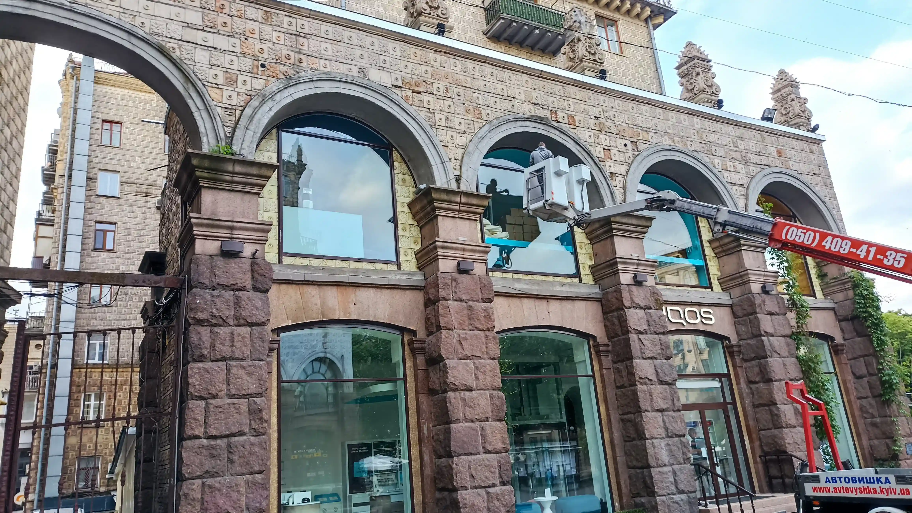

Що ми робимо під час прибирання після ремонту

🧹 Видалення будівельного пилу
Найважливіший етап прибирання після ремонту. Очищаємо всі поверхні, стелі, стіни, меблі, техніку, плінтуси, рами, двері та вентиляцію. Використовуємо професійні пилососи та безпечні засоби.
- ✅ Прибирання після будівельних робіт
- ✅ Спеціальні засоби для алергіків
- ✅ Робота у важкодоступних місцях
- ✅ Виїзд по Києву та Носівці
🌐 Замовити онлайн

🪟 Миття вікон та рам
Після ремонту на вікнах залишаються плями фарби, пил, клей та інші забруднення. Виконуємо професійну мийку з використанням спецзасобів та парогенераторів — без подряпин.
- ✅ Видалення будівельних залишків зі скла та рам
- ✅ Безпечні засоби без розводів
- ✅ Роботи на висоті — балкони, вітрини, лоджії
- ✅ Виїзд по Києву та Носівці
🌐 Замовити онлайн

🧼 Миття підлоги та плитки
Після ремонту на підлозі залишаються сліди цементу, фарби, піни, клею чи пилу. Професійна мийка з використанням спецтехніки — підлога без плям та розводів!
- ✅ Видалення залишків будівельних матеріалів
- ✅ Чистка плитки, ламінату, паркету, лінолеуму
- ✅ Акуратна робота з делікатними покриттями
- ✅ Робота по Києву та Носівці
🌐 Замовити онлайн